Technical Work, Independent Projects, and Professional Experience
This page highlights a collection of personal projects and professional experiences developed both inside and outside of formal coursework. Together, they reflect an interest in practical problem-solving, system design, and learning through hands-on development.
Many of these projects were driven by personal curiosity and a desire to build tools that could simplify everyday tasks or provide flexible solutions when needed. Rather than building solely for assignments, I focused on creating applications that were usable, adaptable, and grounded in real-world scenarios.
Collectively, these experiences demonstrate independent learning, iterative development, and the ability to translate ideas into functional systems.
Worked as a Software Engineering Intern at an early-stage AI startup building an agentic conversational platform. Contributed to production code across the full stack, building features and designing REST APIs. The stack centered on TypeScript, Python, and JavaScript, powering an Angular frontend with real-time voice interaction controls and a Node.js/Express backend connected via REST APIs to a Python-based AI agent.
Served as a Group Camp Counselor at Camp Eagle over three summers, supporting a faith-based mission focused on Christ-like character development through outdoor adventure, authentic relationships, and biblical truth. In this role, I led middle and high school students through intentionally designed experiences that combined physical challenge, relational growth, and spiritual formation.
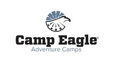
Worked as a Shift Manager and certified trainer at Raising Cane's, overseeing shift-level operations while training new hires on food safety, customer service, and operational standards in a high-volume fast-casual environment.
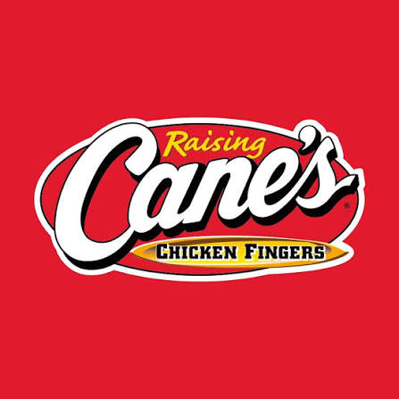
Worked as a crew member and trainer at Braum's throughout high school, gaining an early foundation in customer service, food preparation, and workplace responsibility across three years of consistent employment.
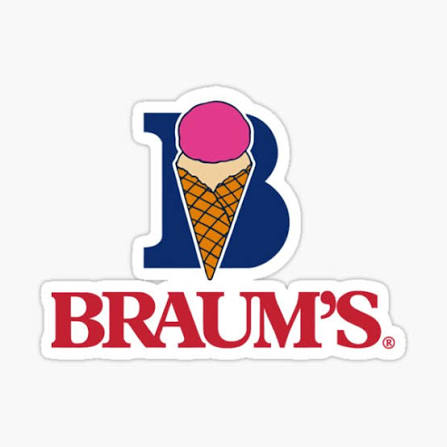
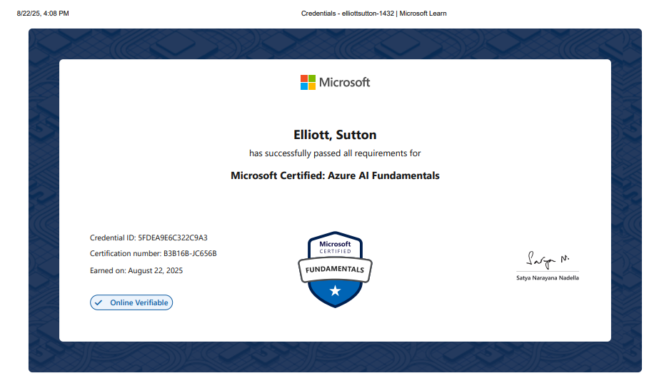
Earned Microsoft certification validating a foundational understanding of artificial intelligence concepts, including machine learning, computer vision, and Azure-based AI services, with an emphasis on practical cloud applications and responsible AI principles.
View Certificate →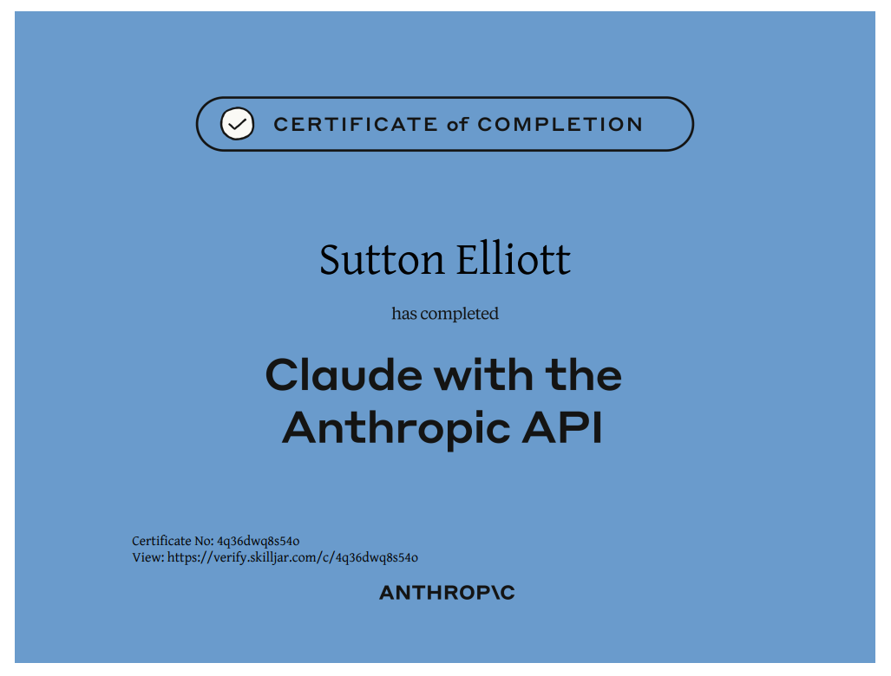
A developer-focused course covering API fundamentals through advanced AI application architecture — prompt engineering, tool use, retrieval-augmented generation, prompt caching, and building agent-based systems.
View Certificate →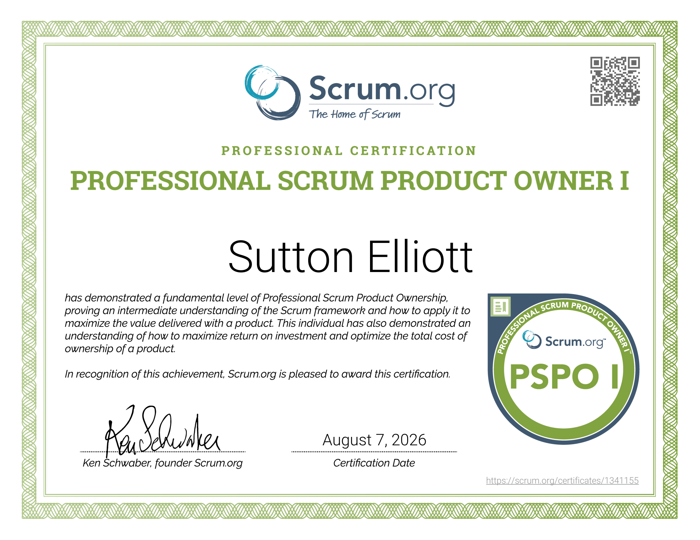
Earned Scrum.org certification validating an intermediate understanding of the Scrum framework and how to apply it to maximize product value, including agile project management, backlog ownership, and product management practices.
View Certificate →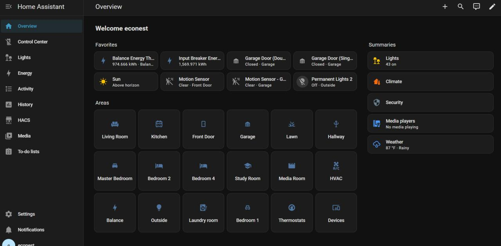
EcoNest is a full-stack smart home automation system deployed in a live residential environment, integrating 84 devices across Zigbee, Wi-Fi, and cloud APIs. The backend runs on a Dockerized Home Assistant instance hosted on a Mac Mini, with data flowing from devices through custom logger scripts into a Flask API and MySQL database. A reasoning layer sits on top of the pipeline to enable intelligent automation decisions based on real-time sensor input.
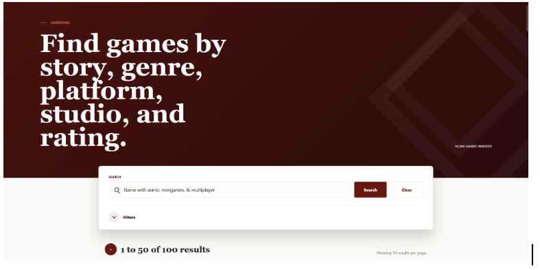
GameSense is a content-based game recommendation and search engine built on a dataset of 25,000 titles sourced from the IGDB API. The system applies TF-IDF vectorization and cosine similarity to match user queries against game descriptions, genres, and metadata with meaningful relevance ranking. A Flask web application serves as the frontend, providing an intuitive interface for search and discovery.
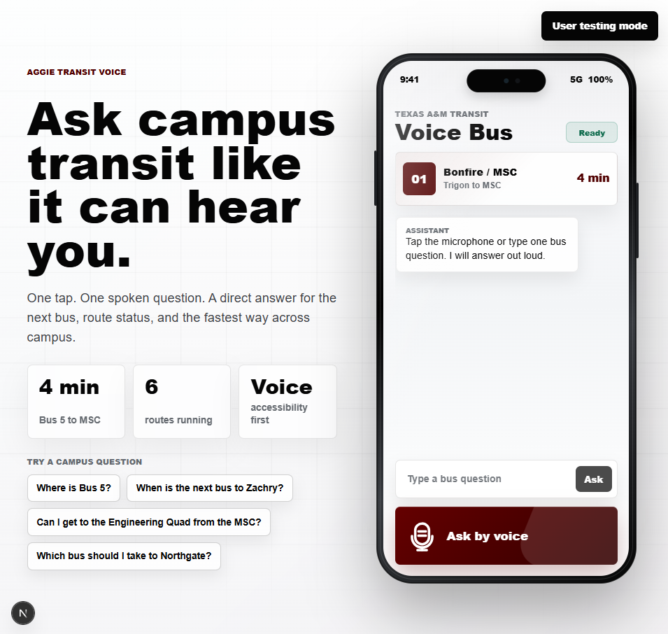
TAMU Transit Voice is a voice-first web prototype designed to make the Texas A&M bus system accessible to low-vision and visually impaired students. The interface replaces the existing map-based app with a single microphone button and spoken, AI-generated responses, integrating the browser's Web Speech API for input and Speech Synthesis API for audio output, backed by TAMU's OpenWebUI platform.
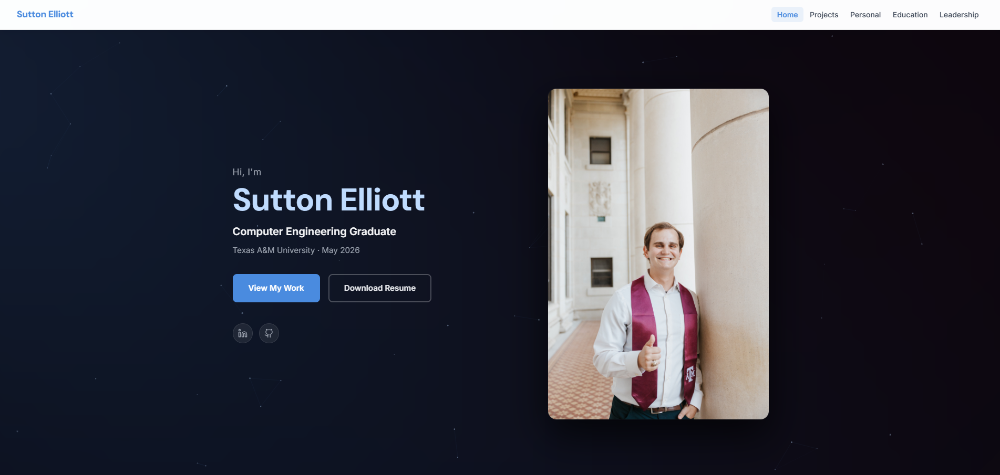
Designed and developed a personal portfolio website to present projects, academic background, and technical skills in a clear and professional format. The site serves as both a personal brand and a centralized showcase of work.
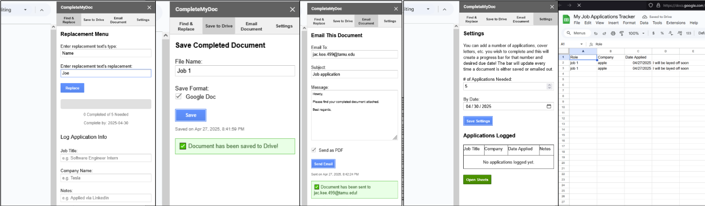
Designed and developed a custom Google Docs sidebar add-on to streamline document workflows and reduce repetitive manual tasks by consolidating multiple utilities into a single interface.
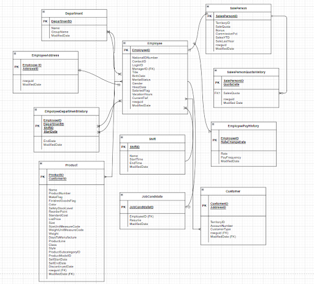
Developed an interactive analytics dashboard for exploring enterprise-scale employee, department, and sales data using the AdventureWorks database. The project emphasized database design, query optimization, and data analysis.